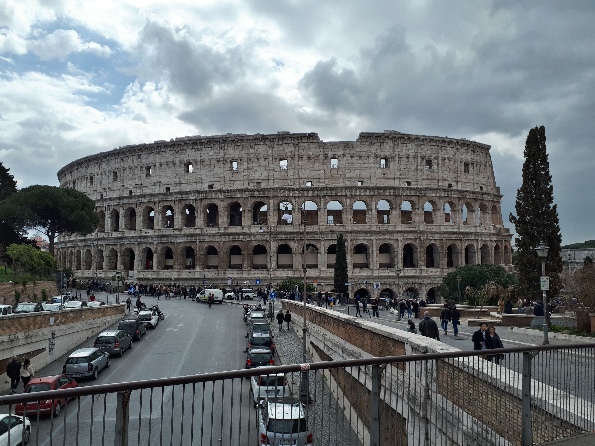
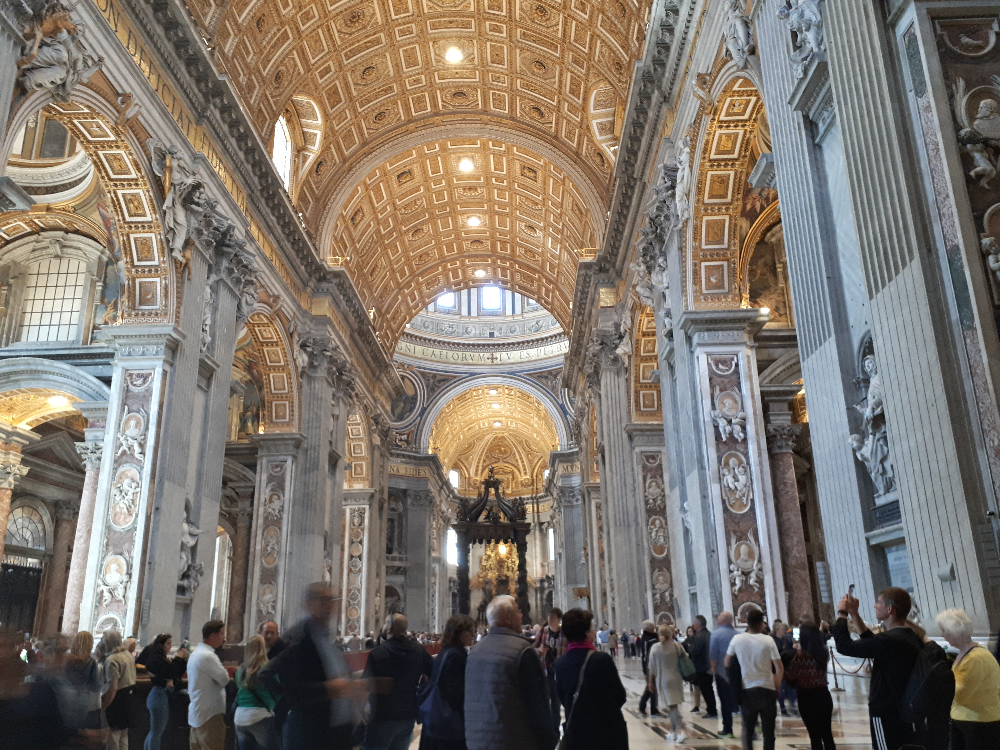
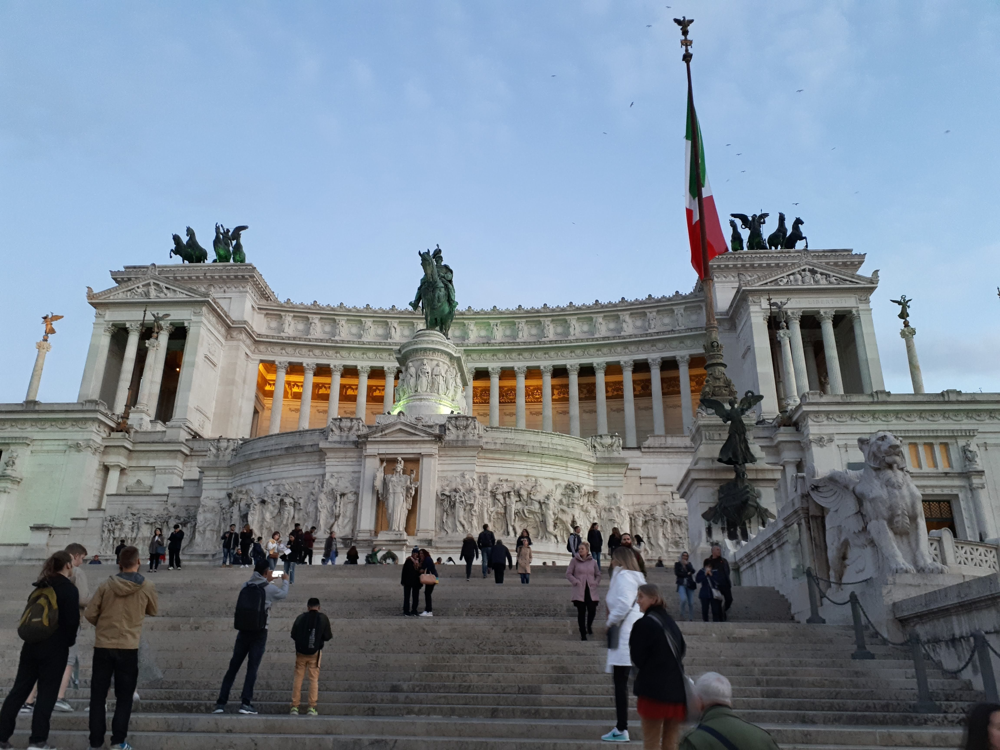

Rome is home to hundreds of monuments from late antiquity, who have stood the test of time, breath taking renaissance churches and amazing modern buildings.
Javier Lodeiro
18/10/2022
The Colosseum is the most rewowned building in Italy. It was a roman amphitheatre, that finished construction in the year 80 CE. Its name derives from a giant statue that used to be near the Colosseum, depicting former emperor Nero. It is the largest ancient amphitheatre ever built, and it saw thousands of gladiator fights and other events to entertain the roman populace. Estimations suggest that at its peak, it could hold eighty thousands spectators, and it even held naval battles!
The Colosseum, taken by me, 2019
The Vatican city is a microstate situated in the western side of the Tiber river. It is entirely ruled by the catholic church, and home to Saint Peter's Basilica. Saint Peter's is one of the largest cathedrals in the world, and counts with great sights, such as the architectural marvel of its dome, and the sculpture of La Pietà, both created by Michelangelo. Just behind Saint Peter's, you will find the Sistine Chapel, a chapel entirely painted by Michelangelo, and one of the most important buildings in the Renaissance.
Inside of Saint Peter's, taken by me, 2019
This one is not nearly as known as the others, but if you go to Italy you will see it being an iconic part of the roman skyline. It is a monument dedicated to king Vittorio Emanuele II, a king who aided by Garibaldi, unified Italy. It draws a lot from classic architecture in style, but the building is fairly new, having been completed in 1935, and includes a shrine dedicated to the roman goddess Rome and to the unknown italian soldier. The monument is one of the symbols of the reunification in Italy
Façade of the Altare della Patria, taken by me, 2019